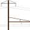

Introduction

The Open NEC Project is a massive, work-in-progress systems overhaul mod for Train Simulator 20xx that encompasses Amtrak's Northeast Corridor locale from Washington, DC to Boston. The mod is planned to include enhancements for all of the Amtrak, NJ Transit, Metro-North, and other equipment that Dovetail Games has released for the Northeast Corridor. It will also include upgrades for the signaling systems of the various routes.
To make this all possible, the project provides drop-in replacements for Dovetail's Lua bytecode. With control of the Lua scripting, we have complete control over the behavior of locomotive's systems, as well as the route's signaling system. Thus, we can fix bugs and make dramatic improvements to the experience.
Currently, the project consists of a single enhancement mod for Amtrak's AEM-7 locomotive, as well as complete Automatic Train Control (ATC) and Advanced Civil Speed Enforcement System (ACSES) implementations.
Contents of this manual
This manual is divided into several chapters. In the Installation chapter, you can find information on obtaining and installing the mod and when you can expect the next release. In the For players chapter, you can learn how to navigate the newly improved Northeast Corridor with your newly upgraded equipment. In the For contributors chapter, developers can find information on how to contribute to the project, as well as technical documentation on Dovetail's content.